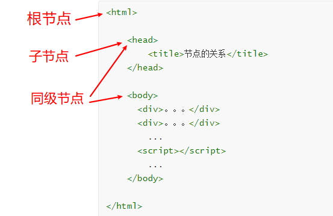

解析神器xpath使用教程
介绍
XPath (XML Path Language) 是一门在 HTML\XML 文档中查找信息的语言，可用来在 HTML\XML 文档中对元素和属性进行遍历。
为什么要学习xpath和parsel
- parsel是一款高性能的 Python HTML/XML 解析器。
- 将字符串转化为Selector对象,Selector对象具有xpath的方法,返回结果的列表，能够接受bytes类型的数据和str类型的数据。
- 我们可以利用XPath，来快速的定位特定元素以及获取节点信息
节点
每个html的标签我们都称之为节点。（根节点、子节点、同级节点）

xpath说明
XPath 使用路径表达式来选取 XML 文档中的节点或者节点集。
xpath表达式
| 表达式 | 描述 |
|---|---|
| nodename | 选中该元素。 |
| / | 从根节点选取、或者是元素和元素间的过渡。 |
| // | 从匹配选择的当前节点选择文档中的节点，而不考虑它们的位置。跨节点获取标签 |
| . | 选取当前节点。 |
| .. | 选取当前节点的父节点。 |
| @ | 选取属性。 |
| text() | 选取文本。 |
- 选取未知节点
| 通配符 | 描述 |
|---|---|
| * | 匹配任何元素节点。 |
| @* | 匹配任何属性节点。 |
| node() | 匹配任何类型的节点。 |
| /div/* | 选取 div元素的所有子元素。 |
|---|---|
| //* | 选取文档中的所有元素。 |
| //title[@*] | 选取所有带有属性的 title 元素。 |
xpath的使用方法
要用到parsel模块
import parsel
使用xpath的前提是 具有xpath方法 –> Selector对象
提取到的数据返回一个列表
转换数据类型方法
1 | data = parsel.Selector(html_str).extract() # parsel能够把缺失的html标签补充完成 |
xpath表达式说明
1 | <div> |
- 从根节点开始，获取所有 a 标签
1 | result = data.xpath('/html/body/div/ul/li/a').extract() |
- 跨节点获取所有 a 标签
1 | result = data.xpath('//a').extract() |
- 选取当前节点 使用场景：需要对选取的标签的下一级标签进行多次提取
1 | result = data.xpath('//ul') |
- 选取当前节点的父节点,获取父节点的class属性值
1 | result = data.xpath('//a') |
- 获取第三个 li 标签的节点（两种方法）
1 | result = data.xpath('//li[3]').extract() |
- 通过定位属性的方法获取第四个 a 标签
1 | result = data.xpath('//a[@href="link4.html"]').extract() |
- 用属性定位标签，获取第四个 a 标签包裹的文本内容
1 | result = data.xpath('//a[@href="link4.html"]/text()').extract() |
- 获取第五个 a 标签的href属性值
1 | result = data.xpath('//li[5]/a/@href').extract() |
可以将上面的代码复制到本地 print一下
或者直接使用谷歌浏览器插件 xpath helper
下载方式：
本地下载安装方法可以百度，很简单的–>传送门
本博客所有文章除特别声明外，均采用 CC BY-NC-SA 4.0 许可协议。转载请注明来自 包子's Blog！
 wechat
wechat alipay
alipay

评论